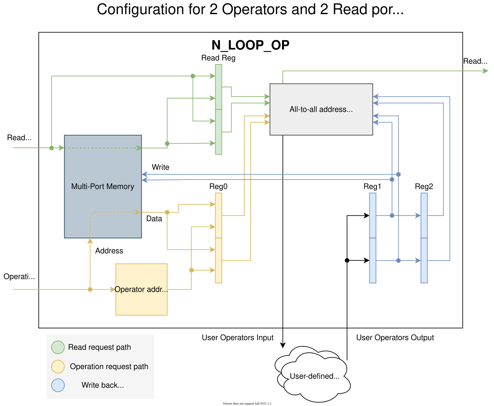

N_LOOP_OP¶
The N_LOOP_OP (N-loop operator) is a unit for performing multiple parallel read-modify-write operations over an multi-port memory. The user defines the number of read-modify-write interfaces (operators) and the number of read-only interfaces (these have simpler architecture) and the unit provides user-friendly interfaces for this to be done. There are 2 main reasons why this is easier compared to solving the problem yourself:
The memory can have a non-zero read and write latency, so performing operations in 2 consecutive cycles over the same item in the memory requires put-aside registers for fast access to recently modified data. This problem is even more complicated when there are multiple parallel operators present. The N_LOOP_OP contains the logic nessesary to solve this.
When requesting multiple simultaneous operations over the same item (using the same address), a collision occurs. This unit provides information about the occurence of a collision and enables the user to solve it as he seem fit. (For example by defining a priority of one operation over the other.)
The core part of this unit is the multi-port memory unit NP_LUTRAM.
Warning
Some parts of the N_LOOP_OP have a quadratic logic complexity depending on the number of operators. Try to keep this number as low as possible to avoid problems with timing and resource consumption.
Block diagram¶
{kind=link}

Operator flow¶
Here is an example of how the N_LOOP_OP can be used when working with items stored in a memory. This example demonstrates how to use the unit’s interfaces and the overall flow of operators.
Situation¶
Lets say you have a memory with statistic 64 counters. Your design is connected to 3 independent interfaces (I0, I1 and I2). Each of the interfaces can send you a request to increment or decrement the a counter on a specific address (0 - 63) by 1. There is also an interface Iset, which can send you a request to set a counter to a specific value.
When multiple increment / decrement requests are issued over the same counter, you want the result to be the combination of all the requests.
(e.g. for 2 increments and 1 decrement: CNT_next <= CNT + 1 + 1 - 1 )
A set request has a priority over any increment or decrement requests over the same counter.
Solution¶
To implement this example using the N_LOOP_OP you need to define the following:
Number of operators.
The number of operators must be set as the maximum number of different counters, that can be updated at the same time. Since we have 4 interfaces sending completely independent requests, the number will be 4. (i.e. the worst case is every interface requesting an operation on a different address.)
Number of operations
This value can vary depending on how you want to implement the operations. In this case it is simple. We only need 3 operations: increment, decrement and set. However, if we only specify these 3 operations we might run into a problem. The problem will occur, when I0 and I1 requests an increment and I2 a decrement, all on the same address. The N_LOOP_OP will detect the collision and transfer all the requests to one interface. Here, it will show, that both increment and decrement have been requested and that the requests came from those 3 different interfaces. But, from this infromation alone we cannot deduce whether there was 1 inrement and 2 decrements or 1 decrement and 2 increments. To solve this, we need to define separate set of increment and decrement operations for I0, for I1 and for I2. Luckily, this will only slightly increase the logic complexity of the N_LOOP_OP. This way we get a total of 7 operations: I0_increment, I1_increment, I2_increment, I0_deccrement, I1_deccrement, I2_deccrement and set. Note, that the operations are not actually named in the N_LOOP_OP. The N_LOOP_OP only sees them as 7 bit positions in the operations interface. The implementations itself is provided by the user.
Now we connect the request input interface:
OP_ITEM_SEL - Target counter address OP_OPERATIONS - The operation to perform (each interface can request multiple operatios at once, but this is not our case) OP_META - Here will the Iset interfaces propagate the value to which it wants to set the counter. The other interfaces don’t need this port.
The order in which we connect the interfaces to the OP_ interface does not matter to the N_LOOP_OP, but for us it can be useful to connect the Iset interface to port index 0 as we will demonstrate later on.
Next comes the definition of the operators themselves.
Generaly, the N_LOOP_OP expects all the operators to be the same block of asynchronous logic.
The input of this logic is the OP_IN_ interface and the output is the OP_OUT_DATA.
Such implementation for this example could look something like this:
-- Pseudo-VHDL, data type compatibility ignored.
operators_pr : process (OP_IN_SEL, OP_IN_SRC, OP_IN_OPS, OP_IN_DATA, OP_IN_META)
variable tmp : integer := 0;
begin
for i in 0 to 4-1 loop
-- default behavior
OP_OUT_DATA(i) <= OP_IN_DATA(i);
tmp := 0;
-- Increment
for e in 0 to 3-1 loop
if (OP_IN_OPS(i)(e) = '1') then
tmp := tmp+1;
end if;
end loop;
-- Decrement
for e in 3 to 6-1 loop
if (OP_IN_OPS(i)(e) = '1') then
tmp := tmp-1;
end if;
end loop;
OP_DATA_OUT(i) <= OP_DATA_IN(i) + tmp;
-- Set (has overwrites any previous increment or decrement)
if (OP_IN_OPS(i)(6) = '1') then
OP_DATA_OUT(i) <= OP_IN_META(i);
end if;
end loop;
end process;
When a collision is detected between multiple ports, the N_LOOP_OP joins all the requested operations to that port with the lowest index.
(e.g When port 1 and 3 request operations 0 and 1, respectively, the OP_IN_ interface on index 1 will show both operation 0 and 1 while on index 3 there will be no operations.)
Knowing this, we can optimize the design by connecting the Iset to port 0 of the OP_ interface.
Now, only operator process 0 needs to support the set operation, because it is the only one which can recieve it.
Additional Features¶
Quick reset¶
Generics: QUICK_RESET_EN and RESET_VAL
The quick reset feature allows you to reset all values in the internal memory to a specific value by activating the RESET.
This feature adds additional logic.